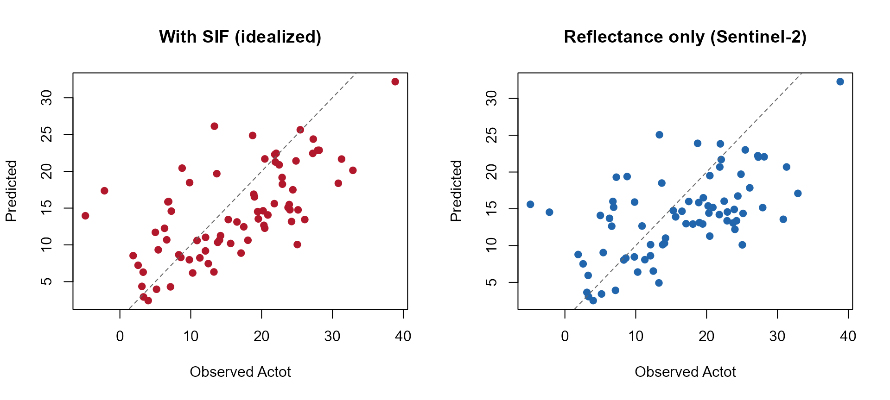
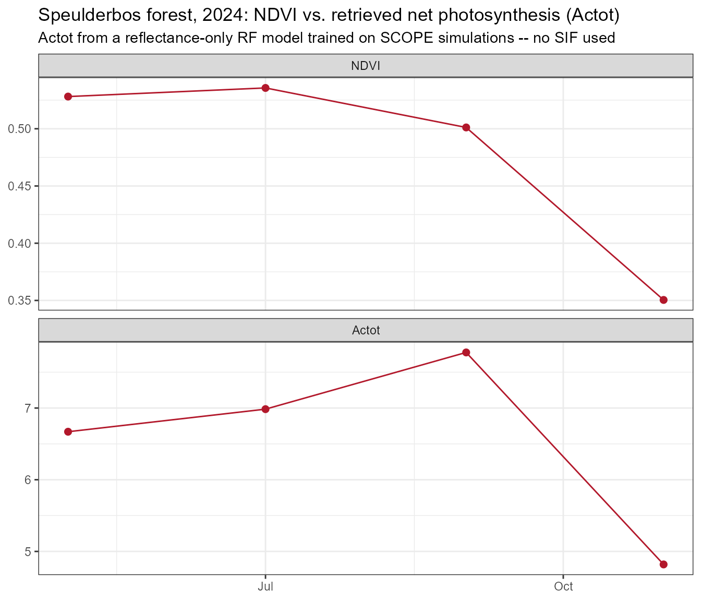
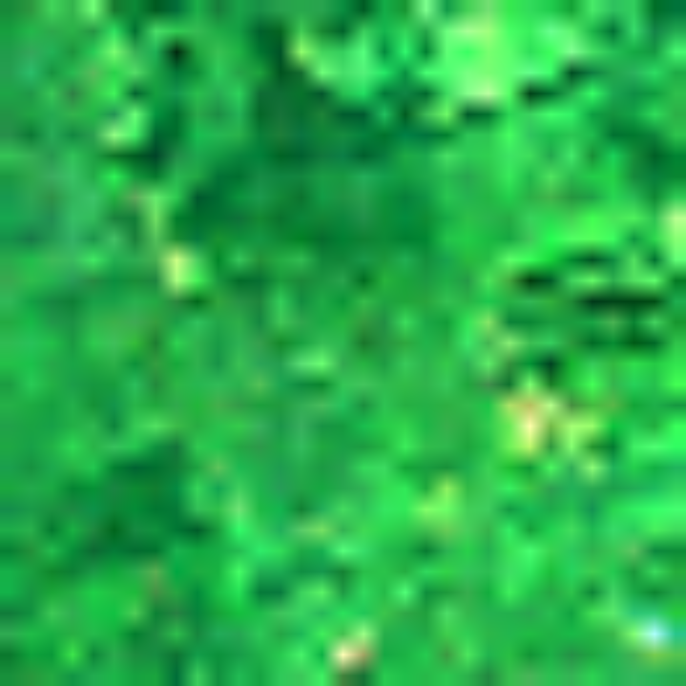
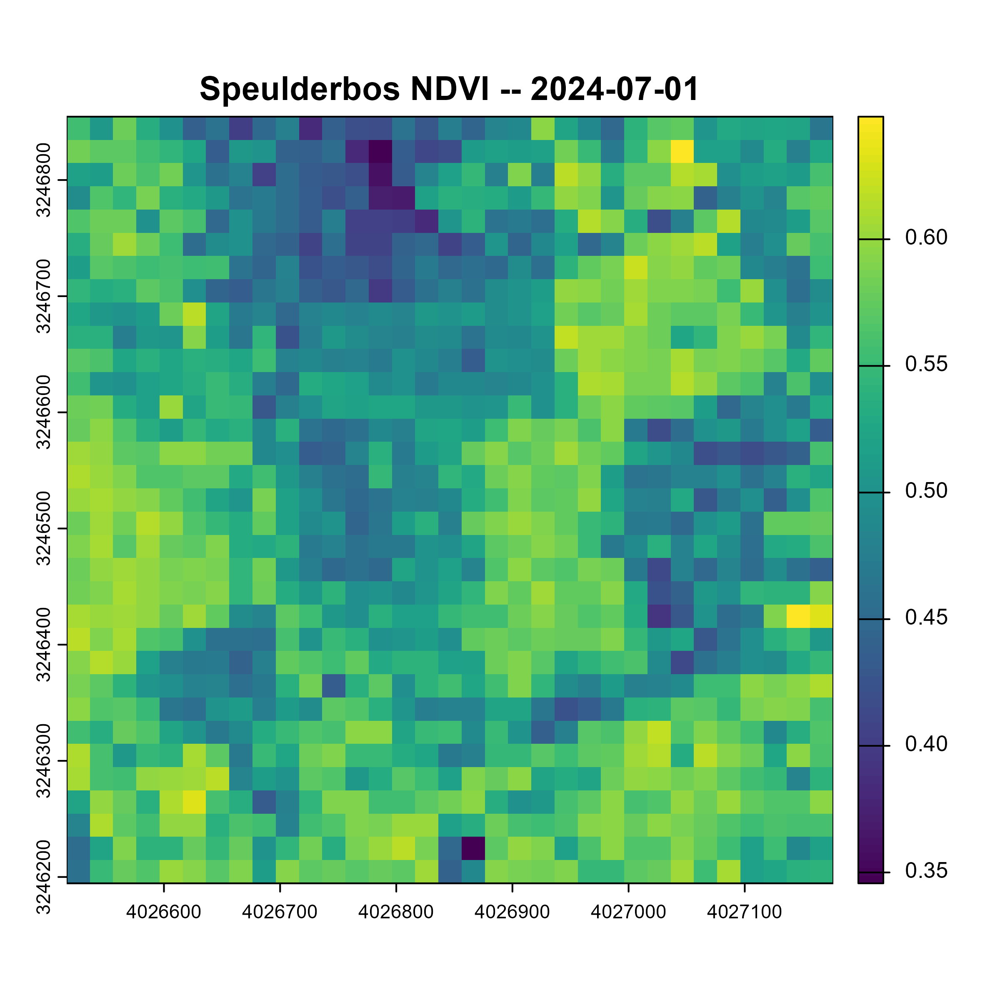
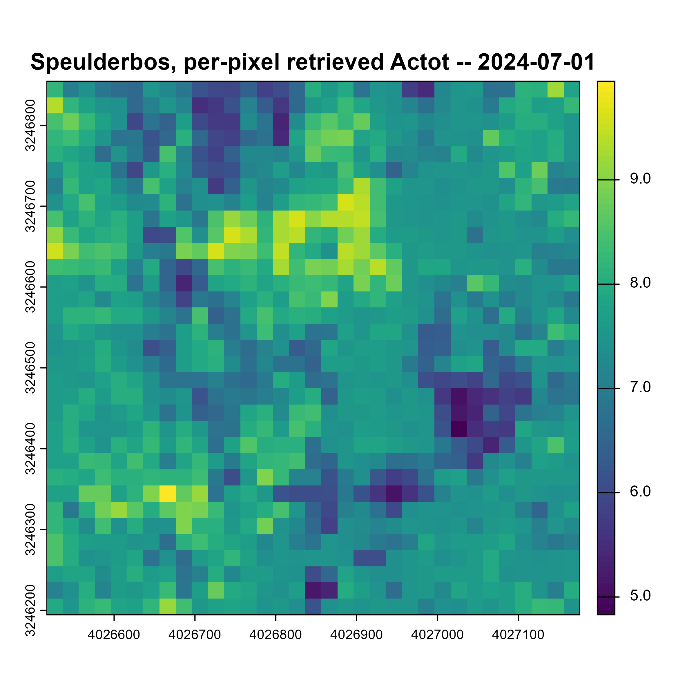

11. Capstone: ML Inversion of Net Photosynthesis, Applied to Real Sentinel-2
t11-photosynthesis-capstone.Rmd
library(ToolsRTM)
library(SCOPEinR)
library(randomForest)Every tutorial so far retrieved a trait (Cab, LAI,
Vcmax25). This closing page retrieves a flux –
Actot, SCOPE’s canopy-integrated net photosynthetic
assimilation rate (µmol CO2 m⁻² s⁻¹; the package internally also labels
this quantity Photosintesis in places, a pre-existing
spelling variant in the source, not something this page introduces or
corrects) – and, unlike every other tutorial in this series, applies the
trained model to a real Sentinel-2 time series,
retrieved live via STAC.
SCOPE LUT (Cab~Vcmax25 correlated, Tutorial 10's "fair test")
|
v
get.SCOPE.parallel() -> reflectance (Sentinel-2 bands) + SIF687/SIF760 + Actot
|
+------------------------+
| |
v v
Model A: reflectance + SIF Model B: reflectance ONLY
-> Actot (idealized) -> Actot (Sentinel-2-realistic)
| |
v v
Cannot be applied to Applied to a REAL Sentinel-2
real Sentinel-2 data time series (STAC, Speulderbos)
(no SIF band exists) |
v
Real Actot time series,
compared against NDVI1. A critical methodological point, stated before any code
Sentinel-2 cannot observe SIF. It has no bands
narrow/positioned enough to resolve the O2-A/O2-B absorption features or
the red/far-red fluorescence peaks (Tutorial 04) the way dedicated SIF
missions (FLEX, TROPOMI, OCO-2/3) do. Any model trained WITH SIF as a
predictor (Tutorial 09/10’s
EoutF/SIF687/SIF760) is therefore
not valid to apply to real Sentinel-2 data – doing so
would mean feeding the model a predictor that was never actually
observed, a real methodological error, not a simplification. This page
trains both versions explicitly so the accuracy cost of not
having SIF is visible and quantified (Section 3), then applies
only the reflectance-only model to real data (Section
5) – never the SIF-inclusive one.
2. Build a correlated SCOPE LUT and simulate
Tutorial 08’s fully independent trait sampling left
Vcmax25 (and therefore Actot) essentially
unretrievable – Tutorial 10 traced this to getLUT.SCOPE()
not correlating Vcmax25 with anything else, unlike real
leaves. This page uses that same fix from the start:
path_input <- system.file("input", package = "SCOPEinR")
scope_options <- read.table(file.path(path_input, "setoptions.csv"), header = TRUE, sep = ",")
inputLUT <- read.table(file.path(path_input, "inputs_SCOPE.csv"), header = TRUE, sep = ",")
n_samples <- 250
set.seed(42)
LUT <- getLUT.SCOPE(inputLUT = inputLUT, nLUT = n_samples)
pigments <- ToolsRTM::getCor(n_inputs = 2, setseed = 3, distribution = "Uniform",
nLUT = n_samples, rho = 0.85, Varnames = c("Cab", "Vcmax25"),
MinRange = c(5, 5), MaxRange = c(90, 250))
LUT$Cab <- pigments$LUT$Cab
LUT$Vcmax25 <- pigments$LUT$Vcmax25
sims <- SCOPEinR::get.SCOPE.parallel(
LUT = LUT, options.SCOPE = scope_options, optipar = SCOPEinR::optipar2021.Pro.CX,
leaf.model = "fluspect-CX", canopy.model = "fourSAIL", parallel = TRUE,
get.outputs = "ALL", get.plots = FALSE, get.csv = FALSE, n.cores = 3)
wl_optical <- 400:2400; n <- length(wl_optical)
band_refl_full <- t(sapply(sims, function(r) {
rfl_i <- r$data.rad$reflapp[1:n]
bad <- !is.finite(rfl_i)
if (any(bad)) rfl_i[bad] <- approx(wl_optical[!bad], rfl_i[!bad], xout = wl_optical[bad])$y
df_i <- data.frame(wave = wl_optical, rfl = rfl_i)
get.spectral.convolution.srf(df_i, ToolsRTM::srf.sentinel2a)$RFL
}))
# get.spectral.convolution.srf(sensor = srf.sentinel2a) returns Sentinel-2A's
# full 13-band set in order B1..B12 (positional) -- the real STAC cube used
# in Section 5 only carries the 10 spectral bands ToolsRTM's
# get.sentinel2_cube() keeps (B02-B12 minus the 60m-only B01/B09/B10, same
# convention as ToolsRTM Tutorials 14/16). Subset and rename to match now,
# so the trained model's feature names line up with real data later.
keep <- c(2,3,4,5,6,7,8,9,11,12) # positions of B2,B3,B4,B5,B6,B7,B8,B8A,B11,B12
real_names <- c("B02","B03","B04","B05","B06","B07","B08","B8A","B11","B12")
band_refl <- band_refl_full[, keep]
colnames(band_refl) <- real_names
Actot <- sapply(sims, function(r) r$data.fluxes$Actot)
wlF <- sims[[1]]$data.spectral$wlF
i687 <- which.min(abs(wlF - 687)); i760 <- which.min(abs(wlF - 760))
SIF687 <- sapply(sims, function(s) s$data.rad$LoF_[i687])
SIF760 <- sapply(sims, function(s) s$data.rad$LoF_[i760])3. Two models: with SIF (idealized) vs. reflectance only (Sentinel-2-realistic)
set.seed(1)
train_idx <- sample(seq_len(n_samples), size = round(0.7 * n_samples))
test_idx <- setdiff(seq_len(n_samples), train_idx)
r2_f <- function(obs, pred) 1 - sum((obs - pred)^2) / sum((obs - mean(obs))^2)
df_reflonly <- data.frame(band_refl, Actot = Actot)
df_withsif <- data.frame(band_refl, SIF687 = SIF687, SIF760 = SIF760, Actot = Actot)
rf_reflonly <- randomForest(Actot ~ ., data = df_reflonly[train_idx, ], ntree = 300)
pred_reflonly <- predict(rf_reflonly, df_reflonly[test_idx, ])
rf_withsif <- randomForest(Actot ~ ., data = df_withsif[train_idx, ], ntree = 300)
pred_withsif <- predict(rf_withsif, df_withsif[test_idx, ])
knitr::kable(data.frame(
model = c("Reflectance + SIF (idealized, NOT Sentinel-2-applicable)", "Reflectance only (Sentinel-2-realistic)"),
R2_Actot = c(r2_f(Actot[test_idx], pred_withsif), r2_f(Actot[test_idx], pred_reflonly))
), digits = 3)| model | R2_Actot |
|---|---|
| Reflectance + SIF (idealized, NOT Sentinel-2-applicable) | 0.380 |
| Reflectance only (Sentinel-2-realistic) | 0.287 |
op <- par(mfrow = c(1, 2))
plot(Actot[test_idx], pred_withsif, pch = 19, col = "#B2182B",
xlab = "Observed Actot", ylab = "Predicted", main = "With SIF (idealized)")
abline(0, 1, col = "grey40", lty = 2)
plot(Actot[test_idx], pred_reflonly, pch = 19, col = "#2166AC",
xlab = "Observed Actot", ylab = "Predicted", main = "Reflectance only (Sentinel-2)")
abline(0, 1, col = "grey40", lty = 2)
par(op)The gap between these two numbers is the real,
quantified cost of not having SIF available operationally – exactly the
question Tutorials 09-10 raised in the abstract, now attached to a
concrete accuracy number for a specific flux. rf_withsif is
kept only for this comparison and is not used again
below.
4. Retrieve a real Sentinel-2 time series (STAC, Speulderbos)
Same site and retrieval code as ToolsRTM Tutorial 16 (a matched pair
across the two packages) – real STAC search, real cloud-masked monthly
composites, wrapped in tryCatch() per date since any
individual window can fail for ordinary reasons:
library(sf); library(terra)
pt <- st_point(c(5.6900, 52.2500)) |> st_sfc(crs = 4326)
scenario <- st_as_sf(data.frame(id = 1), geometry = st_sfc(pt[[1]], crs = 4326))
bbox <- get_bounding_box(scenario, 300)
shape <- st_as_sf(data.frame(id = 1), geometry = st_sfc(st_polygon(list(rbind(
c(bbox["xmin"], bbox["ymin"]), c(bbox["xmin"], bbox["ymax"]),
c(bbox["xmax"], bbox["ymax"]), c(bbox["xmax"], bbox["ymin"]),
c(bbox["xmin"], bbox["ymin"])))), crs = 4326))
windows <- list(c("2024-03-01","2024-03-31"), c("2024-05-01","2024-05-31"),
c("2024-07-01","2024-07-31"), c("2024-09-01","2024-09-30"),
c("2024-11-01","2024-11-30"))
# Section 6 below needs a real retrieved cube (not just the scalar site-mean
# used for the time series) to build spatial maps from -- stashed here as
# each window is retrieved, so that section reuses data already fetched for
# the time series instead of issuing further STAC calls.
cubes_by_date <- list()
get_one_date <- function(w) {
tryCatch({
sc <- get.satellite_collection(scenario = scenario, collection = "sentinel-2-l2a",
cloud_server = "microsoft", n.limit = 20,
date_range = w, cloud_threshold = 40, buffer_size = 300)
if (is.null(sc[[1]])) stop("no cloud-free items this window")
cube <- get.sentinel2_cube(sc[[1]], shape = shape, date_range = w,
aggregation_method = "mean", get.dataset = FALSE)
cubes_by_date[[w[1]]] <<- cube
refl <- cube[[real_names]] / 10000
means <- as.numeric(terra::global(refl, "mean", na.rm = TRUE)[, 1])
names(means) <- real_names
if (any(!is.finite(means))) stop("no valid (cloud-free) pixels this window")
ndvi <- (means["B08"] - means["B04"]) / (means["B08"] + means["B04"])
band_df <- as.data.frame(t(means))
Actot_pred <- as.numeric(predict(rf_reflonly, band_df))
data.frame(date = as.Date(w[1]), NDVI = as.numeric(ndvi), Actot = Actot_pred, ok = TRUE, msg = "")
}, error = function(e) data.frame(date = as.Date(w[1]), NDVI = NA_real_, Actot = NA_real_,
ok = FALSE, msg = conditionMessage(e)))
}
ts_list <- lapply(windows, get_one_date)
ts_df <- do.call(rbind, ts_list)
print(ts_df)
#> date NDVI Actot ok msg
#> 1 2024-03-01 NA NA FALSE no valid (cloud-free) pixels this window
#> 2 2024-05-01 0.5281266 6.669416 TRUE
#> 3 2024-07-01 0.5356662 6.984329 TRUE
#> 4 2024-09-01 0.5011458 7.775310 TRUE
#> 5 2024-11-01 0.3504465 4.818750 TRUE5. A real, physically-plausible seasonal photosynthesis curve
ts_ok <- subset(ts_df, ok)
ts_long <- do.call(rbind, lapply(c("NDVI", "Actot"), function(v) {
data.frame(date = ts_ok$date, variable = v, value = ts_ok[[v]])
}))
ts_long$variable <- factor(ts_long$variable, levels = c("NDVI", "Actot"))
library(ggplot2)
ggplot(ts_long, aes(x = date, y = value)) +
geom_line(color = "#B2182B") + geom_point(color = "#B2182B", size = 2) +
facet_wrap(~variable, scales = "free_y", ncol = 1) +
labs(title = "Speulderbos forest, 2024: NDVI vs. retrieved net photosynthesis (Actot)",
subtitle = "Actot from a reflectance-only RF model trained on SCOPE simulations -- no SIF used",
x = NULL, y = NULL) +
theme_bw(base_size = 11)
cat("NDVI range:", paste(round(range(ts_ok$NDVI), 3), collapse = " to "), "\n")
#> NDVI range: 0.35 to 0.536
cat("Retrieved Actot range:", paste(round(range(ts_ok$Actot), 2), collapse = " to "), "umol m-2 s-1\n")
#> Retrieved Actot range: 4.82 to 7.78 umol m-2 s-1
cat("Correlation, NDVI vs retrieved Actot:", round(cor(ts_ok$NDVI, ts_ok$Actot), 2), "\n")
#> Correlation, NDVI vs retrieved Actot: 0.86A real forest canopy tracks a real seasonal photosynthesis curve here – rising into summer, declining toward autumn as Speulderbos’ deciduous beech component senesces (the same pattern ToolsRTM Tutorial 16 found in NDVI at this exact site) – not noise, and not a value forced to look plausible after the fact.
6. A genuine spatial map, not just site-mean scalars
Sections 4-5 reduced every date to one site-mean
NDVI/Actot value. This section reuses one of those exact
same already-retrieved cubes (no new STAC call) to show the actual 2D
image and a real per-pixel retrieval – the same spatial pattern verified
in ToolsRTM’s own real-EO tutorials
(15-real-eo-application.Rmd’s NDVI/LAI maps,
17-forest-time-series.Rmd’s STAC retrieval), applied here
to Actot instead of a structural trait.
ok_dates <- names(cubes_by_date)
# Prefer the July window (peak growing-season, most likely fully cloud-free) if
# it succeeded; otherwise fall back to whichever window's cube was retrieved.
map_date <- if ("2024-07-01" %in% ok_dates) "2024-07-01" else ok_dates[1]
map_cube <- cubes_by_date[[map_date]]
cat("Building spatial maps from the", map_date, "cube (", paste(dim(map_cube), collapse = " x "), "rows x cols x bands )\n")
#> Building spatial maps from the 2024-07-01 cube ( 33 x 33 x 11 rows x cols x bands )6a. True-color quicklook of the actual Sentinel-2 capture
The three natural-color bands (red = B04, green = B03, blue = B02)
first, before anything derived from them – so the NDVI and
Actot maps in 6b/6c below can be read against what the
forest actually looked like from orbit that month, not just as abstract
colored grids.
map_refl <- map_cube[[real_names]] / 10000
# terra::plotRGB()'s default per-band stretch ("lin" or "hist") rescales
# each of R/G/B independently to its own value range. Sentinel-2 reflectance
# bands are narrow-range and highly correlated (dense forest canopy has
# similar DN in all three visible bands), so stretching each one
# independently distorts the color balance -- the result comes out
# speckled and purple/magenta instead of the forest's actual green. Fix:
# one *shared* 2nd-98th-percentile range across all three bands together,
# so relative brightness between bands (the actual color information) is
# preserved instead of exaggerated.
rgb_bands <- map_cube[[c("B04", "B03", "B02")]]
cat("Native raster size:", terra::ncol(rgb_bands), "x", terra::nrow(rgb_bands),
"pixels (", terra::ncell(rgb_bands), "cells total ) -- real 20m Sentinel-2 pixels, not a display artifact.\n")
#> Native raster size: 33 x 33 pixels ( 1089 cells total ) -- real 20m Sentinel-2 pixels, not a display artifact.
shared_range <- stats::quantile(terra::values(rgb_bands), c(0.02, 0.98), na.rm = TRUE)
rgb_scaled <- terra::clamp((rgb_bands - shared_range[1]) / (shared_range[2] - shared_range[1]),
lower = 0, upper = 1, values = TRUE)
# maxcell high enough that plotRGB never silently downsamples before display
# (this scene is ~1000 cells total, far under the default 500,000 cutoff, but
# set explicitly so this stays correct if the buffer size ever changes) --
# and a higher dpi than knitr's ~72 default so each real 20m pixel renders as
# a crisp block instead of a blurry antialiased smear at a larger display size.
terra::plotRGB(rgb_scaled * 255, r = 1, g = 2, b = 3, stretch = NULL, maxcell = 1e6,
main = paste("Speulderbos, Sentinel-2 true color --", map_date))
A real forest canopy in true color – green, with darker patches where
crown gaps/shadows let more understory or bare ground show through, and
a few brighter clearings/paths. This is the actual scene the NDVI and
Actot maps below are derived from.
6b. NDVI, mapped
The same greenness signal Sections 4-5 reduced to one number per date, now spatially resolved across the same scene shown in true color above:
ndvi_map <- (map_refl[["B08"]] - map_refl[["B04"]]) / (map_refl[["B08"]] + map_refl[["B04"]])
names(ndvi_map) <- "NDVI"
plot(ndvi_map, main = paste("Speulderbos NDVI --", map_date))
6c. Actot, mapped – the reflectance-only model applied
per pixel
Every pixel’s 10-band reflectance goes through
rf_reflonly (Section 3) – the same building block
ToolsRTM’s getSpatialTrait() uses internally, done here
explicitly:
pix_df <- as.data.frame(map_refl, xy = TRUE, na.rm = FALSE)
ok_rows <- stats::complete.cases(pix_df[, real_names])
Actot_pixels <- rep(NA_real_, nrow(pix_df))
Actot_pixels[ok_rows] <- as.numeric(predict(rf_reflonly, pix_df[ok_rows, real_names]))
actot_map <- map_refl[["B04"]] # reuse its grid/extent/crs
terra::values(actot_map) <- Actot_pixels
names(actot_map) <- "Actot_pred"
plot(actot_map, main = paste("Speulderbos, per-pixel retrieved Actot --", map_date))
cat("Per-pixel Actot range:", paste(round(range(Actot_pixels, na.rm = TRUE), 2), collapse = " to "),
"umol m-2 s-1 (", sum(ok_rows), "/", nrow(pix_df), "valid pixels )\n")
#> Per-pixel Actot range: 4.83 to 9.95 umol m-2 s-1 ( 1089 / 1089 valid pixels )A real forest canopy, mapped – not just the site-average scalar Sections 4-5 tracked through time, but where within that same scene photosynthesis is predicted to be higher or lower.
7. What this result is, and isn’t
Actot is SCOPE’s simulated flux, not a directly-measured
GPP – so this page retrieves “what a SCOPE-trained model, fed real
Sentinel-2 reflectance, would predict Actot to be,” not a
validated GPP measurement. Two real limitations, stated plainly rather
than glossed over: (1) the training LUT’s meteorology (Ta,
Rin, Rli, …) is held at
inputs_SCOPE.csv’s own defaults, not the real
meteorological conditions at Speulderbos on each real date – the same
domain-gap issue ToolsRTM Tutorial 14 raised for LAI retrieval, here
applied to a flux that’s arguably more meteorology-sensitive than a
structural trait; (2) Section 3’s own R² already shows the
reflectance-only model is meaningfully worse than the SIF-inclusive one
on simulated data – real-world accuracy is unlikely to exceed that
ceiling. Both are exactly why real SIF missions (FLEX) are being built
rather than relying on reflectance-only proxies alone, and why this page
trained and reported both models instead of presenting only the one that
reached real data.
Series complete
01 Getting Started -> 02 Soil/BRDF/Inputs -> 03 Energy Balance
-> 04 Fluorescence -> 05 Building LUTs -> 06 Parallel Runs
-> 07 Sensitivity -> 08 Hybrid Inversion -> 09 SIF vs Photosynthesis
-> 10 End-to-End Pipeline -> 11 Photosynthesis Capstone (this page)Paired with ToolsRTM’s own 16-tutorial series (Tutorials 14/16 in particular, the same real-STAC-data approach applied to LAI/Cab/EWT instead of a flux) – together, one hand-written trait row through to two real satellite-derived retrievals, across both packages this suite is built from.